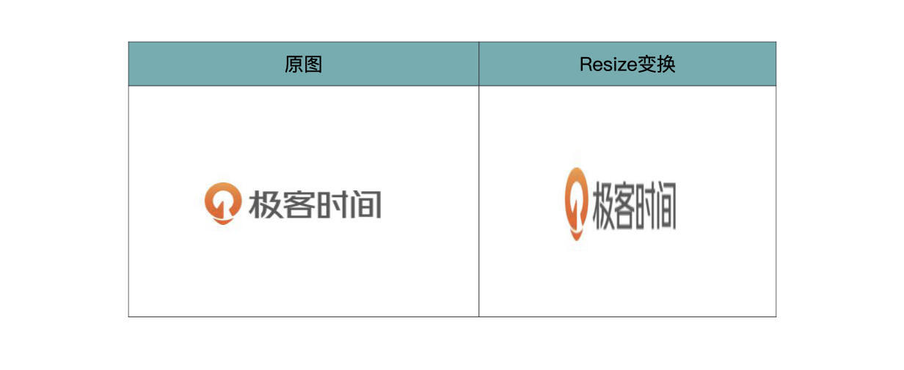
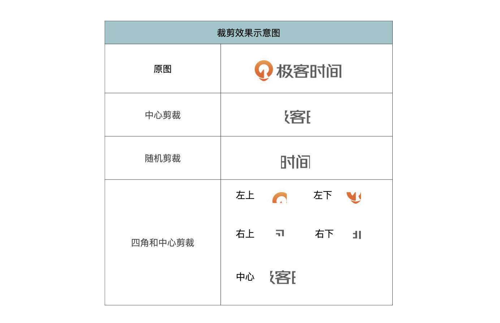
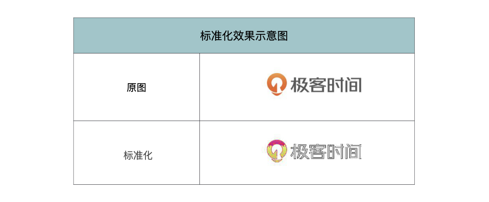

- 00 开篇词 如何高效入门PyTorch？.md.html
- 01 PyTorch：网红中的顶流明星.md.html
- 02 NumPy（上）：核心数据结构详解.md.html
- 03 NumPy（下）：深度学习中的常用操作.md.html
- 04 Tensor：PyTorch中最基础的计算单元.md.html
- 05 Tensor变形记：快速掌握Tensor切分、变形等方法.md.html
- 06 Torchvision（上）：数据读取，训练开始的第一步.md.html
- 07 Torchvision（中）：数据增强，让数据更加多样性.md.html
- 08 Torchvision（下）：其他有趣的功能.md.html
- 09 卷积（上）：如何用卷积为计算机“开天眼”？.md.html
- 10 卷积（下）：如何用卷积为计算机“开天眼”？.md.html
- 11 损失函数：如何帮助模型学会“自省”？.md.html
- 12 计算梯度：网络的前向与反向传播.md.html
- 13 优化方法：更新模型参数的方法.md.html
- 14 构建网络：一站式实现模型搭建与训练.md.html
- 15 可视化工具：如何实现训练的可视化监控？.md.html
- 16 分布式训练：如何加速你的模型训练？.md.html
- 17 图像分类（上）：图像分类原理与图像分类模型.md.html
- 18 图像分类（下）：如何构建一个图像分类模型_.md.html
- 19 图像分割（上）：详解图像分割原理与图像分割模型.md.html
- 20 图像分割（下）：如何构建一个图像分割模型？.md.html
- 21 NLP基础（上）：详解自然语言处理原理与常用算法.md.html
- 22 NLP基础（下）：详解语言模型与注意力机制.md.html
- 23 情感分析：如何使用LSTM进行情感分析？.md.html
- 24 文本分类：如何使用BERT构建文本分类模型？.md.html
- 25 摘要：如何快速实现自动文摘生成？.md.html
- 加餐 机器学习其实就那么几件事.md.html
- 用户故事 Tango：师傅领进门，修行在个人.md.html
- 答疑篇 思考题答案集锦.md.html
- 结束语 人生充满选择，选择与努力同样重要.md.html
- 捐赠
07 Torchvision（中）：数据增强，让数据更加多样性
你好，我是方远。
上一节课，我们一同迈出了训练开始的第一步——数据读取，初步认识了Torchvision，学习了如何利用Torchvision读取数据。不过仅仅将数据集中的图片读取出来是不够的，在训练的过程中，神经网络模型接收的数据类型是Tensor，而不是PIL对象，因此我们还需要对数据进行预处理操作，比如图像格式的转换。
与此同时，加载后的图像数据可能还需要进行一系列图像变换与增强操作，例如裁切边框、调整图像比例和大小、标准化等，以便模型能够更好地学习到数据的特征。这些操作都可以使用torchvision.transforms工具完成。
今天我们就来学习一下，利用Torchvision如何进行数据预处理操作，如何进行图像变换与增强。
图像处理工具之torchvision.transforms
Torchvision库中的torchvision.transforms包中提供了常用的图像操作，包括对Tensor 及PIL Image对象的操作，例如随机切割、旋转、数据类型转换等等。
按照torchvision.transforms 的功能，大致分为以下几类：数据类型转换、对PIL.Image 和 Tensor进行变化和变换的组合。下面我们依次来学习这些类别中的操作。
数据类型转换
在上一节课中，我们学习了读取数据集中的图片，读取到的数据是PIL.Image的对象。而在模型训练阶段，需要传入Tensor类型的数据，神经网络才能进行运算。
那么如何将PIL.Image或Numpy.ndarray格式的数据转化为Tensor格式呢？这需要用到transforms.ToTensor() 类。
而反之，将Tensor 或 Numpy.ndarray 格式的数据转化为PIL.Image格式，则使用transforms.ToPILImage(mode=None) 类。它则是ToTensor的一个逆操作，它能把Tensor或Numpy的数组转换成PIL.Image对象。
其中，参数mode代表PIL.Image的模式，如果mode为None（默认值），则根据输入数据的维度进行推断：
- 输入为3通道：mode为’RGB’；
- 输入为4通道：mode为’RGBA’；
- 输入为2通道：mode为’LA’;
- 输入为单通道：mode根据输入数据的类型确定具体模式。
说完用法，我们来看一个具体的例子加深理解。以极客时间的LOGO图片（文件名为：jk.jpg）为例，进行一下数据类型的相互转换。具体代码如下。
from PIL import Image
from torchvision import transforms
img = Image.open('jk.jpg')
display(img)
print(type(img)) # PIL.Image.Image是PIL.JpegImagePlugin.JpegImageFile的基类
'''
输出:
<class 'PIL.JpegImagePlugin.JpegImageFile'>
'''
# PIL.Image转换为Tensor
img1 = transforms.ToTensor()(img)
print(type(img1))
'''
输出:
<class 'torch.Tensor'>
'''
# Tensor转换为PIL.Image
img2 = transforms.ToPILImage()(img1) #PIL.Image.Image
print(type(img2))
'''
输出:
<class 'PIL.Image.Image'>
'''
首先用读取图片，查看一下图片的类型为PIL.JpegImagePlugin.JpegImageFile，这里需要注意，PIL.JpegImagePlugin.JpegImageFile类是PIL.Image.Image类的子类。然后，用transforms.ToTensor() 将PIL.Image转换为Tensor。最后，再将Tensor转换回PIL.Image。
对 PIL.Image 和 Tensor 进行变换
torchvision.transforms 提供了丰富的图像变换方法，例如：改变尺寸、剪裁、翻转等。并且这些图像变换操作可以接收多种数据格式，不仅可以直接对PIL格式的图像进行变换，也可以对Tensor进行变换，无需我们再去做额外的数据类型转换。
下面我们依次来看一看。
Resize
将输入的 PIL Image 或 Tensor 尺寸调整为给定的尺寸，具体定义为：
torchvision.transforms.Resize(size, interpolation=2)
我们依次看下相关的参数：
- size：期望输出的尺寸。如果 size 是一个像 (h, w) 这样的元组，则图像输出尺寸将与之匹配。如果 size 是一个 int 类型的整数，图像较小的边将被匹配到该整数，另一条边按比例缩放。
- interpolation：插值算法，int类型，默认为2，表示 PIL.Image.BILINEAR。
有关Size中是tuple还是int这一点请你一定要注意。
让我说明一下，在我们训练时，通常要把图片resize到一定的大小，比如说128x128，256x256这样的。如果直接给定resize后的高与宽，是没有问题的。但如果设定的是一个int型，较长的边就会按比例缩放。
在resize之后呢，一般会接一个crop操作，crop到指定的大小。对于高与宽接近的图片来说，这么做问题不大，但是高与宽的差距较大时，就会crop掉很多有用的信息。关于这一点，我们在后续的图像分类部分还会遇到，到时我在详细展开。
我们还是以极客时间的LOGO图片为例，一起看一下Resize的效果。
from PIL import Image
from torchvision import transforms
# 定义一个Resize操作
resize_img_oper = transforms.Resize((200,200), interpolation=2)
# 原图
orig_img = Image.open('jk.jpg')
display(orig_img)
# Resize操作后的图
img = resize_img_oper(orig_img)
display(img)
首先定义一个Resize操作，设置好变换后的尺寸为(200, 200)，然后对极客时间LOGO图片进行Resize变换。- 原图以及Resize变换后的效果如下表所示。

剪裁
torchvision.transforms提供了多种剪裁方法，例如中心剪裁、随机剪裁、四角和中心剪裁等。我们依次来看下它们的定义。
先说中心剪裁，顾名思义，在中心裁剪指定的 PIL Image 或 Tensor，其定义如下：
torchvision.transforms.CenterCrop(size)
其中，size表示期望输出的剪裁尺寸。如果 size 是一个像 (h, w) 这样的元组，则剪裁后的图像尺寸将与之匹配。如果 size 是 int 类型的整数，剪裁出来的图像是 (size, size) 的正方形。
然后是随机剪裁，就是在一个随机位置剪裁指定的 PIL Image 或 Tensor，定义如下：
torchvision.transforms.RandomCrop(size, padding=None)
其中，size代表期望输出的剪裁尺寸，用法同上。而padding表示图像的每个边框上的可选填充。默认值是 None，即没有填充。通常来说，不会用padding这个参数，至少对于我来说至今没用过。
最后要说的是FiveCrop，我们将给定的 PIL Image 或 Tensor ，分别从四角和中心进行剪裁，共剪裁成五块，定义如下：
torchvision.transforms.FiveCrop(size)
size可以是int或tuple，用法同上。- 掌握了各种剪裁的定义和参数用法以后，我们来看一下这些剪裁操作具体如何调用，代码如下。
from PIL import Image
from torchvision import transforms
# 定义剪裁操作
center_crop_oper = transforms.CenterCrop((60,70))
random_crop_oper = transforms.RandomCrop((80,80))
five_crop_oper = transforms.FiveCrop((60,70))
# 原图
orig_img = Image.open('jk.jpg')
display(orig_img)
# 中心剪裁
img1 = center_crop_oper(orig_img)
display(img1)
# 随机剪裁
img2 = random_crop_oper(orig_img)
display(img2)
# 四角和中心剪裁
imgs = five_crop_oper(orig_img)
for img in imgs:
display(img)
流程和Resize类似，都是先定义剪裁操作，然后对极客时间LOGO图片进行不同的剪裁。- 具体剪裁效果如下表所示。

翻转
接下来，我们来看一看翻转操作。torchvision.transforms提供了两种翻转操作，分别是：以某一概率随机水平翻转图像和以某一概率随机垂直翻转图像。我们分别来看它们的定义。
以概率p随机水平翻转图像，定义如下：
torchvision.transforms.RandomHorizontalFlip(p=0.5)
以概率p随机垂直翻转图像，定义如下：
torchvision.transforms.RandomVerticalFlip(p=0.5)
其中，p表示随机翻转的概率值，默认为0.5。- 这里的随机翻转，是为数据增强提供方便。如果想要必须执行翻转操作的话，将p设置为1即可。
以极客时间的LOGO图片为例，图片翻转的代码如下。
from PIL import Image
from torchvision import transforms
# 定义翻转操作
h_flip_oper = transforms.RandomHorizontalFlip(p=1)
v_flip_oper = transforms.RandomVerticalFlip(p=1)
# 原图
orig_img = Image.open('jk.jpg')
display(orig_img)
# 水平翻转
img1 = h_flip_oper(orig_img)
display(img1)
# 垂直翻转
img2 = v_flip_oper(orig_img)
display(img2)
翻转效果如下表所示。
只对Tensor进行变换
目前版本的Torchvision（v0.10.0）对各种图像变换操作已经基本同时支持 PIL Image 和 Tensor 类型了，因此只针对Tensor的变换操作很少，只有4个，分别是LinearTransformation（线性变换）、Normalize（标准化）、RandomErasing（随机擦除）、ConvertImageDtype（格式转换）。
这里我们重点来看最常用的一个操作：标准化，其他3个你可以查阅官方文档。
标准化
标准化是指每一个数据点减去所在通道的平均值，再除以所在通道的标准差，数学的计算公式如下：
\[output=(input-mean)/std\]
而对图像进行标准化，就是对图像的每个通道利用均值和标准差进行正则化。这样做的目的，是为了保证数据集中所有的图像分布都相似，这样在训练的时候更容易收敛，既加快了训练速度，也提高了训练效果。
让我来解释一下：首先，标准化是一个常规做法，可以理解为无脑进行标准化后再训练的效果，大概率要好于不进行标准化。
我把极客时间的LOGO读入后，所有像素都减去50，获得下图。
对于我们人来说是可以分辨出，这也是极客时间的LOGO。但是计算机（也就是卷积神经网络）就不一定能分辨出来了，因为卷积神经网络是通过图像的像素进行提取特征的，这两张图片像素的数值都不一样，凭什么还让神经网络认为是一张图片？
而标准化后的数据就会避免这一问题，标准化后会将数据映射到同一区间中，一个类别的图片虽说有的像素值可能有差异，但是它们分布都是类似的分布。
torchvision.transforms提供了对Tensor进行标准化的函数，定义如下。
torchvision.transforms.Normalize(mean, std, inplace=False)
其中，每个参数的含义如下所示：
- mean：表示各通道的均值；
- std：表示各通道的标准差；
- inplace：表示是否原地操作，默认为否。
以极客时间的LOGO图片为例，我们来看看以(R, G, B)均值和标准差均为(0.5, 0.5, 0.5)来标准化图片后，是什么效果。
from PIL import Image
from torchvision import transforms
# 定义标准化操作
norm_oper = transforms.Normalize((0.5, 0.5, 0.5), (0.5, 0.5, 0.5))
# 原图
orig_img = Image.open('jk.jpg')
display(orig_img)
# 图像转化为Tensor
img_tensor = transforms.ToTensor()(orig_img)
# 标准化
tensor_norm = norm_oper(img_tensor)
# Tensor转化为图像
img_norm = transforms.ToPILImage()(tensor_norm)
display(img_norm)
上面代码的过程是，首先定义了均值和标准差均为(0.5, 0.5, 0.5)的标准化操作，然后将原图转化为Tensor，接着对Tensor进行标准化，最后再将Tensor转化为图像输出。
标准化的效果如下表所示。

变换的组合
其实前面介绍过的所有操作都可以用 Compose 类组合起来，进行连续操作。
Compose类是将多个变换组合到一起，它的定义如下。
torchvision.transforms.Compose(transforms)
其中，transforms是一个Transform对象的列表，表示要组合的变换列表。- 我们还是结合例子动手试试，如果我们想要将图片变为200*200像素大小，并且随机裁切成80像素的正方形。那么我们可以组合Resize和RandomCrop变换，具体代码如下所示。
from PIL import Image
from torchvision import transforms
# 原图
orig_img = Image.open('jk.jpg')
display(orig_img)
# 定义组合操作
composed = transforms.Compose([transforms.Resize((200, 200)),
transforms.RandomCrop(80)])
# 组合操作后的图
img = composed(orig_img)
display(img)
运行的结果如下表所示，也推荐你动手试试看。
结合datasets使用
Compose类是未来我们在实际项目中经常要使用到的类，结合torchvision.datasets包，就可以在读取数据集的时候做图像变换与数据增强操作。下面让我们一起来看一看。
还记得上一节课中，在利用torchvision.datasets 读取MNIST数据集时，有一个参数“transform”吗？它就是用于对图像进行预处理操作的，例如数据增强、归一化、旋转或缩放等。这里的“transform”就可以接收一个torchvision.transforms操作或者由Compose类所定义的操作组合。
上节课中，我们在读取MNIST数据集时，直接读取出来的图像数据是PIL.Image.Image类型的。但是遇到要训练手写数字识别模型这类的情况，模型接收的数据类型是Tensor，而不是PIL对象。这时候，我们就可以利用“transform”参数，使数据在读取的同时做类型转换，这样读取出的数据直接就可以是Tensor类型了。
不只是数据类型的转换，我们还可以增加归一化等数据增强的操作，只需要使用上面介绍过的Compose类进行组合即可。这样，在读取数据的同时，我们也就完成了数据预处理、数据增强等一系列操作。
我们还是以读取MNIST数据集为例，看下如何在读取数据的同时，完成数据预处理等操作。具体代码如下。
from torchvision import transforms
from torchvision import datasets
# 定义一个transform
my_transform = transforms.Compose([transforms.ToTensor(),
transforms.Normalize((0.5), (0.5))
])
# 读取MNIST数据集 同时做数据变换
mnist_dataset = datasets.MNIST(root='./data',
train=False,
transform=my_transform,
target_transform=None,
download=True)
# 查看变换后的数据类型
item = mnist_dataset.__getitem__(0)
print(type(item[0]))
'''
输出：
<class 'torch.Tensor'>
'''
当然，MNIST数据集非常简单，根本不进行任何处理直接读入的话，效果也非常好，但是它确实适合学习来使用，你可以在利用它进行各种尝试。
我们下面先来看看，在图像分类实战中使用的transform，可以感受一下实际使用的transforms是什么样子：
transform = transforms.Compose([
transforms.RandomResizedCrop(dest_image_size),
transforms.RandomHorizontalFlip(),
transforms.ToTensor(),
transforms.Normalize(mean=[0.485, 0.456, 0.406], std=[0.229, 0.224, 0.225])
])
这也是我在项目中使用的transform。数据增强的方法有很多，不过根据我的经验来看，并不是用的越多，效果越好。
小结
恭喜你完成了这节课的学习，我来给你做个总结。
今天的重点内容就是torchvision.transforms工具的使用。包括常用的图像处理操作，以及如何与torchvision.datasets结合使用。
常用的图像处理操作包括数据类型转换、图像尺寸变化、剪裁、翻转、标准化等等。Compose类还可以将多个变换操作组合成一个Transform对象的列表。
torchvision.transforms与torchvision.datasets结合使用，可以在数据加载的同时进行一系列图像变换与数据增强操作，不仅能够直接将数据送入模型训练，还可以加快模型收敛速度，让模型更好地学习到数据特征。
当然，我们在实际的项目中会有自己的数据，而不会使用torchvision.datasets中提供的公开数据集，我们今天讲的torchvision.transforms 同样可以在我们自定义的数据集中使用，关于这一点，我会在图像分类的实战中继续讲解。
下节课中，我们会介绍Torchvision中其他有趣的功能。包括经典网络模型的实例化与其他有用的函数。
每课一练
Torchvision中 transforms 模块的作用是什么？
欢迎你在留言区跟我交流讨论，也欢迎你把这节课分享给自己的朋友，和他一起尝试一下Torchvision的各种功能。
© 2019 - 2023 Liangliang Lee. Powered by gin and hexo-theme-book.